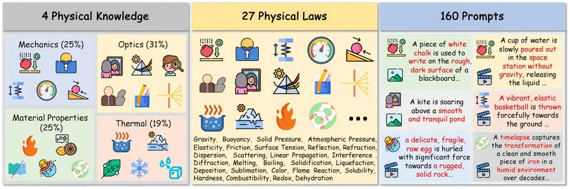
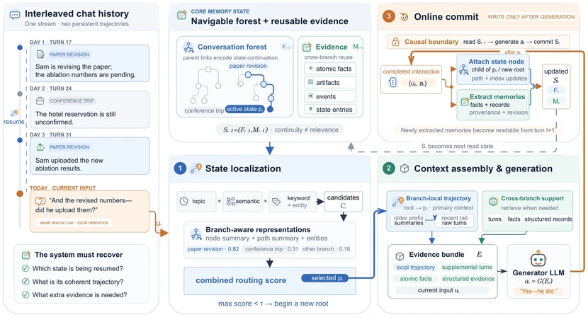

360 Group360 集团
Current至今
Research Intern @ Zhinao研究实习生 · 智脑部门
Coding LLMs: SFT and RL for code generation and SWE agents.代码大模型：面向代码生成与软件工程智能体的 SFT / RL。
I am a master’s student in Key Software at Peking University (2026–2029) and a research intern at 360 Zhinao (360 Group), where I train coding LLMs and software-engineering agents with supervised fine-tuning and reinforcement learning.
I received my B.Eng. in Network Engineering from Beijing University of Posts and Telecommunications, ranking 1st / 50 in my major (GPA 3.82 / 4.0) and receiving the National Scholarship. My work spans agent benchmarks (co-first author of Harness-Bench), physical-commonsense evaluation for video generation (PhyGenBench, ICML 2025), and extreme low-bit quantization (Fairy2i).
我是北京大学关键软件专业硕士研究生（2026–2029），目前在 360 集团智脑部门做研究实习，用监督微调（SFT）与强化学习（RL）训练代码大模型与软件工程智能体。
本科毕业于北京邮电大学网络工程专业，专业排名 1 / 50（绩点 3.82 / 4.0），获国家奖学金。研究工作包括智能体评测（Harness-Bench，共同一作）、文生视频物理常识评测（PhyGenBench，ICML 2025）以及极低比特量化（Fairy2i）。
Research interests研究方向 Coding LLMs & agents代码大模型与智能体 LLM post-training (SFT / RL)大模型后训练（SFT / RL） Multimodal LLMs多模态大模型 Model compression模型压缩
Current至今
Research Intern @ Zhinao研究实习生 · 智脑部门
Coding LLMs: SFT and RL for code generation and SWE agents.代码大模型：面向代码生成与软件工程智能体的 SFT / RL。

2026.09 – 2029.06
M.S. · Key Software硕士 · 关键软件
2022.09 – 2026.06
B.Eng. · Network Engineering本科 · 网络工程
Rank 1 / 50 · GPA 3.82 / 4.0 · avg. 92.4排名 1 / 50 · 绩点 3.82 / 4.0 · 均分 92.4
4 papers4 篇论文 · 337 citations总被引 337 次 · OpenAlex 2026-11-26 · * equal contribution* 共同一作

160 prompts over 27 physical laws that test whether text-to-video models respect physical commonsense, scored by the hierarchical PhyGenEval framework.覆盖 4 大领域、27 条物理定律的 160 条提示词，评测文生视频模型是否符合物理常识，并配套三级层次化评估框架 PhyGenEval。
ICML 2025PosterPosterarXivProject248 citations被引 248

A diagnostic benchmark of 106 sandboxed tasks that isolates how the agent harness (context, tools, state, permissions) changes results across model backends.包含 106 个沙箱离线任务的诊断型基准，在多种模型后端下单独衡量智能体 harness（上下文、工具、状态、权限）对结果的影响。
arXiv 2026arXiv87 citations被引 87Co-first author共同一作

Turns pretrained real-valued LLMs into an equivalent widely-linear complex form, so 2-bit weights in {±1, ±i} come close to full-precision accuracy.把预训练实数 LLM 无损转换为广义线性复数形式，配合相位感知量化与残差递归量化，使 {±1, ±i} 的 2-bit 模型逼近全精度效果。
arXiv 2025arXivCodeModel2 citations被引 2Second author第二作者

An online memory framework that organizes a long-running conversation as a navigable forest of interaction states, so the assistant resumes the right thread.在线记忆框架，把长期对话组织成可导航的“交互状态森林”，让助手准确接续被打断的任务线程。
arXiv 2026arXiv